学習した内容を使用して、課題作成を行います。
あらかじめダウンロードした素材フォルダ「PS03」から「3_5_1.psd」ファイルを開いて
完成画像を確認します。
■完成図
(※今回作成するロゴマークではまだ学習していない選択範囲の取り込みの操作を行いますが、
これは後に学習しますので、今は操作説明通りに行ってください。）
今回作成するロゴマークのファイルです。
上部sample部分を参考に、下部area領域に作成してください。
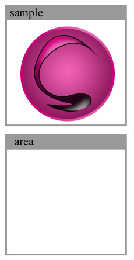
まず、選択範囲を取り込んで図形を作成していきます。
メニューバーの[選択範囲]-[選択範囲を読み込む]から[選択範囲を読み込む]ダイアログを表示し、
[チャンネル]のプルダウンメニューから円を選択し「OK」をクリックします。
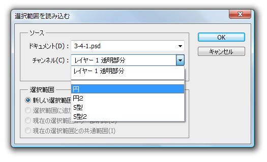
選択範囲を読み込むと「area」領域に丸型の選択範囲が読み込まれます。
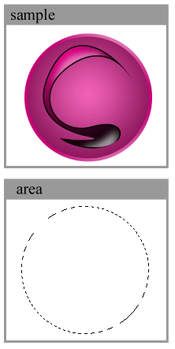
読み込んだ選択範囲内に[塗りつぶしツール]を使って色を塗りつぶし、土台を作成します。
塗りつぶしの色はサンプルから取得しますので、
「描画色を設定」をクリックして[カラーピッカー]パネルを表示し、
サンプルのロゴの外枠部分をクリックして、その箇所の色をピックアップします。
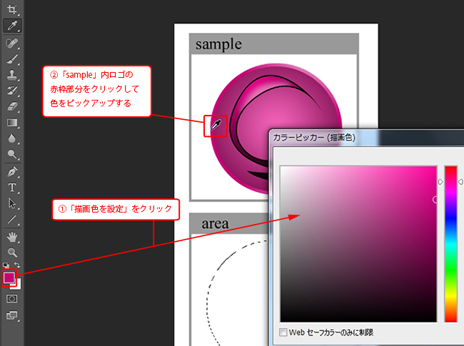
同じ色がピックアップできたら「OK」をクリックしてカラーピッカーを終了します。
次に[塗りつぶしツール]を使って選択範囲内をクリックして色を塗ります。
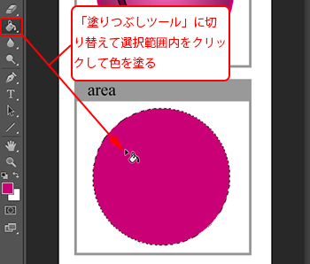
次に[グラデーションツール]を使ってロゴマークに光沢を付けていきます。
まずは[描画色]を「白色」に設定します。
そのまま[グラデーションツール]に切り替えて[クリックでグラデーションを編集]から
下図のように[描画色から透明に]に設定します。
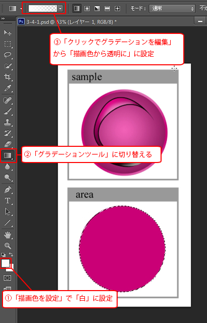
「線形グラデーション」で右上と右下の2方向からからドラッグして、
下図のように光沢のグラデーションを設定しましょう。
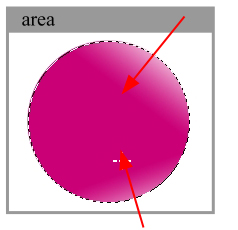
次に、ロゴ土台（内側）を描画していきます。
先程と同様に[選択範囲]メニューから[選択範囲の読み込み]から今度は「円２」を読み込み、
「sample」を参考に下図のように描画を行います。
作成手順：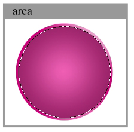
・まずは[塗りつぶしツール]で濃い紫色（カラーコード：#9d246b）の色を塗ります。
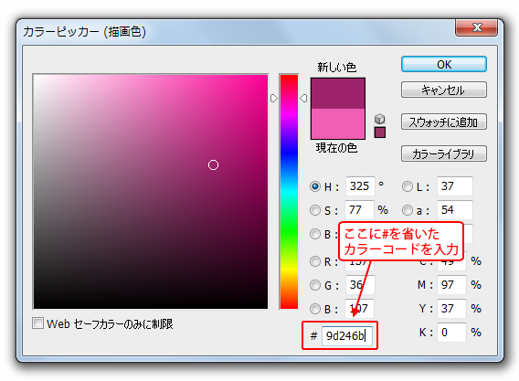
・次に「sample」からグラデーション中央あたりの薄いえんじ色をピックアップします。
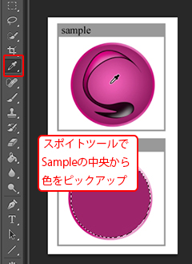
・[グラデーションツール]の「描画色から透明に」に設定し、
「円形グラデーション」に切り替えます。
円中央あたりから外側方向へ向けてグラデーションを設定します。
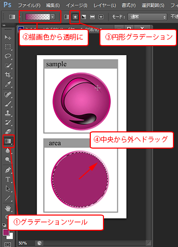
ロゴ内のデザインはこれまでに行ってきた作業と同じ要領で作成できます。
メニューバーの[選択範囲]-[選択範囲を読み込む]で、
「S型」、「S型2」を順に読み込みロゴを完成させましょう。
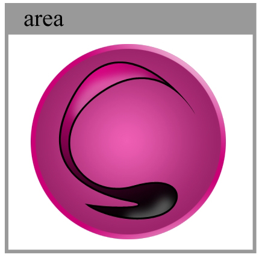
作成手順：
・選択範囲「S型」を取り込んだらまず[塗りつぶしツール]で「黒」に塗りつぶします。
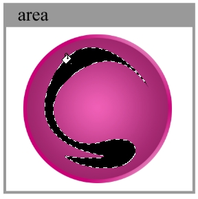
・次に選択範囲「S型2」を取り込みます。描画色を「カラーコード：#df0285」に設定し、
グラデーションツールに切り替えます。グラデーションの設定では、下図のように設定します。
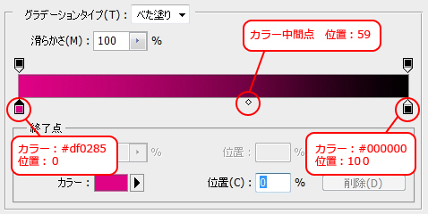
グラデーションの設定ができたら下図を参考に
「S型2」内に「線形グラデーション」で塗りましょう。
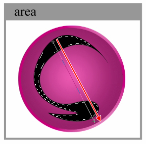
・次に描画色の設定を「白」に設定して、ブラシツールに切り替えます。
設定を下記のようにして、光沢を表現するようにロゴ内に塗りこみます。
直径：40px
硬さ：0%
不透明度：42%
流量：51%
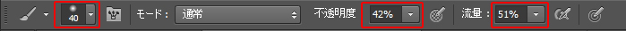
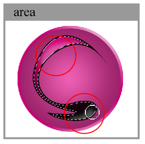
ロゴが完成したら第10章の課題、サイト作成時に再度使用しますので、
WEBページ用で使用できるデータ形式で保存しておきます。
[切り抜きツール]を使って下記のように作成したロゴのみを囲み、【Enterキー】で決定します。
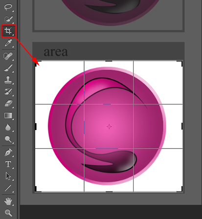
切り抜きができたところで、[レイヤーパネル]の「背景」を非表示にします。
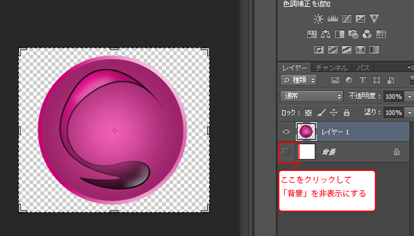
背景を非表示にすることで、ロゴマーク以外の背景部分が透明になります。
この状態でメニューバーの[ファイル]-[Web用に保存]を選択します。
[Web用に保存]ダイアログボックスが表示されますので、
ダイアログ右上のプルダウンメニューから「PNG24」に設定します。
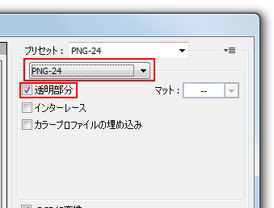
設定が完了したら[保存]ボタンをクリックします。
保存名はロゴ.pngという名前で
素材フォルダ「PS03」に保存しておきましょう。
作業用ファイル3_5_1.psdについても
メニューバーの[ファイル]-[保存]から上書き保存しておきます。
以上でこの章の練習課題は終了です。